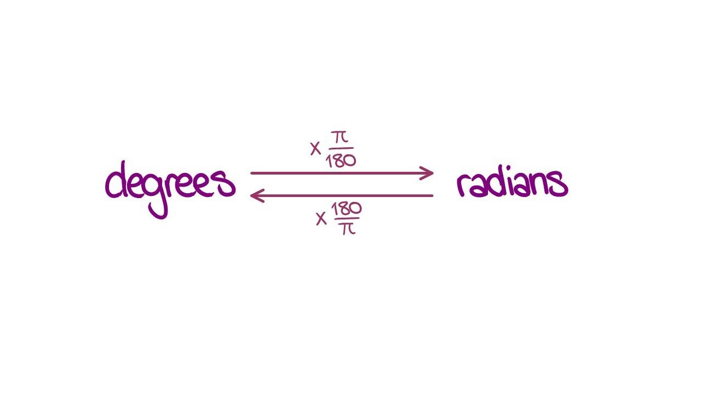

The Unit Circle
The unit circle is made up of many parts. From degrees to radicals. Memorizing the circle and knowing how to convert degrees to radicals and radicals to degrees is key to Math 3.
The Unit Circle

How to Memorize the Unit Circle
The key to memorizing the Unit Circle is first memorizing the degrees of the circle
When you memorize the degrees of the Unit Circle, you can convert them to a radical using the following equation (degrees --> radians)
If you wish to learn more about conversions go to Converting Radicals and Degrees for more information
Once you are able to memorize all the degrees and the equations to convert them to radicals. You have completed the most important parts to memorizing the Unit Circle!
If you are still confused about the Unit Cirle. Watch this short video explaining how to best memorize the Unit Circle:
Here is a blank Unit Circle Sheet if you wish to practice: